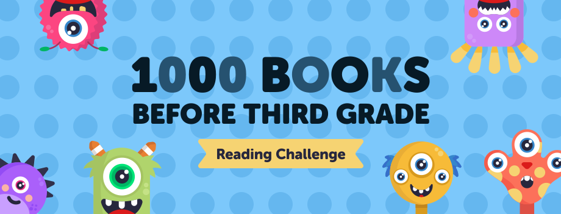
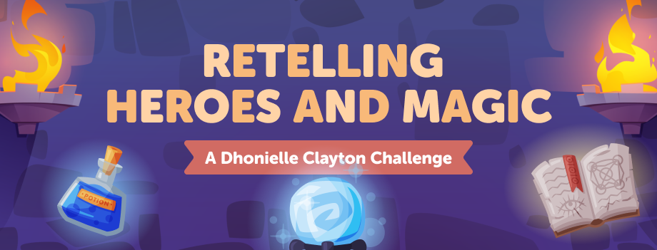
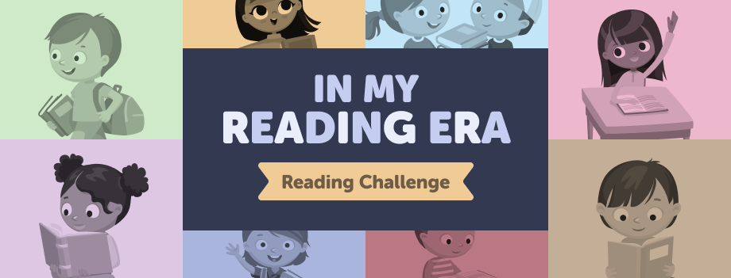
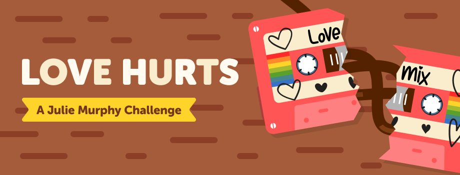
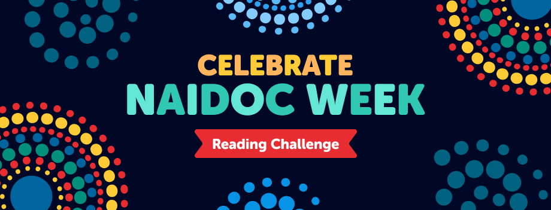
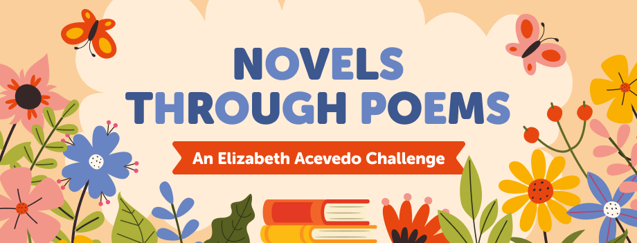
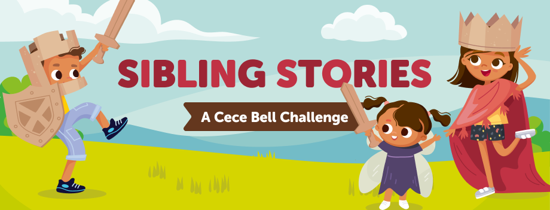
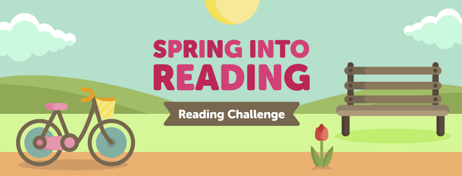

At Beanstack, I created imagery for reading challenges. A reader would log their reading in Beanstack, and it would count for a challenge. You would then get badges based on how many minutes you read, for example. These are the banners that would be displayed along with the challenge.







